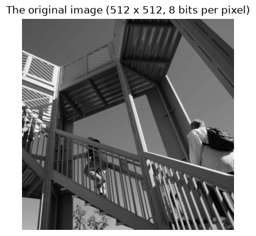
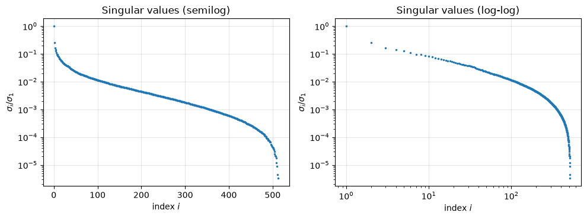
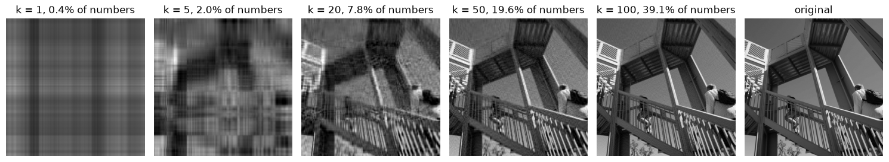
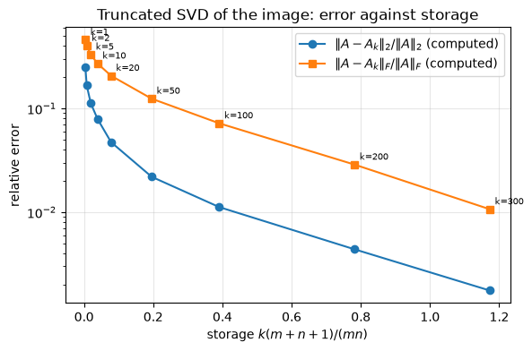

2.12. Case study: image compression with the SVD#
A grayscale image is a matrix of gray levels, and the truncated SVD gives its best approximation of any prescribed rank (Theorem 2.6). Storing the factors \(U_k\), \(\sigma_1,\dots,\sigma_k\), \(V_k\) of a rank-\(k\) approximation of an \(m\times n\) image takes \(k(m+n+1)\) numbers instead of \(mn\). This case study applies the idea to a real photograph, measures the errors honestly, and then asks whether this is a good way to compress images. (It is not, and understanding why is part of the lesson.)
Learning objectives. After working through this case study you should be able to
compute rank-\(k\) approximations of an image and their storage cost;
measure the 2-norm and Frobenius errors from the actual difference \(A-A_k\) and confirm that they equal \(\sigma_{k+1}\) and \((\sum_{i>k}\sigma_i^2)^{1/2}\);
relate the quality of low-rank approximation to the decay of the singular values;
compare SVD compression with a standard image codec and explain the outcome.
The theory is in Section 2.4 of the notes.
import io
import urllib.request
from pathlib import Path
import matplotlib.pyplot as plt
import numpy as np
from PIL import Image # Pillow, installed as a dependency of Matplotlib
rng = np.random.default_rng(2) # not used for the data; kept for the exercises
u = np.finfo(float).eps / 2
plt.rcParams.update({"figure.figsize": (6.4, 4.0), "axes.grid": True, "grid.alpha": 0.3})
DATA_URL = "https://raw.githubusercontent.com/aalsammani/Scientific-Computations-I-Notebooks/main/data/"
def data_file(name):
"""Return a path to data/<name>, downloading it if it is not available locally."""
local = Path("../../data") / name
if local.exists():
return local
target = Path(name)
if not target.exists():
urllib.request.urlretrieve(DATA_URL + name, target)
return target
2.12.1. The data#
The image is the \(512\times512\) 8-bit grayscale photograph “ascent”
distributed with SciPy as scipy.datasets.ascent() [Virtanen et al., 2020].
According to the SciPy documentation it is derived from a photograph on
pixnio.com that is listed as CC0 (public domain). The course repository
stores it in data/ascent.npz under the key image: a uint8 array of shape
\((512, 512)\) whose entries are gray levels from 0 (black) to 255 (white).
The file was produced from the checksum-verified SciPy file without changing
any value (see data/README.md).
img = np.load(data_file("ascent.npz"))["image"]
print(img.shape, img.dtype, "min", img.min(), "max", img.max(), f"mean {img.mean():.1f}")
assert img.shape == (512, 512) and img.dtype == np.uint8
A = img.astype(float) # work in double precision
m, n = A.shape
fig, ax = plt.subplots(figsize=(4.5, 4.5))
ax.imshow(img, cmap="gray", vmin=0, vmax=255)
ax.set_title("The original image (512 x 512, 8 bits per pixel)")
ax.axis("off")
plt.show()
(512, 512) uint8 min 0 max 255 mean 87.5

2.12.2. The SVD of the image#
The full SVD of a \(512\times512\) matrix takes a fraction of a second. We verify it with the backward-stability tolerance used in the lab.
U, s, Vh = np.linalg.svd(A)
recon = np.linalg.norm(A - (U * s) @ Vh, 2) / s[0]
print(f"||A - U Sigma V^T||_2 / ||A||_2 = {recon:.1e}")
assert recon < 10 * max(m, n) * u
print(f"sigma_1 = {s[0]:.1f}, sigma_2 = {s[1]:.1f}, sigma_512 = {s[-1]:.3f}")
print(f"kappa_2(A) = {s[0] / s[-1]:.2e}; numerical rank (NumPy default tolerance) = {np.linalg.matrix_rank(A)}")
||A - U Sigma V^T||_2 / ||A||_2 = 6.8e-15
sigma_1 = 45559.5, sigma_2 = 11410.8, sigma_512 = 0.150
kappa_2(A) = 3.03e+05; numerical rank (NumPy default tolerance) = 512
The image matrix has full numerical rank: there is no exact low-rank structure to find. The first singular value is much larger than the others because all entries are nonnegative with mean about 87; the rank-one term \(\sigma_1u_1v_1^T\) mostly captures the average brightness pattern.
2.12.3. How fast do the singular values decay?#
The error of the best rank-\(k\) approximation is determined entirely by the singular values that are discarded, so their decay is what matters. We also report the fraction of \(\|A\|_F^2 = \sum_i\sigma_i^2\) (often called the “energy”) captured by the first \(k\) terms.
energy = np.cumsum(s**2) / np.sum(s**2)
for frac in (0.9, 0.99, 0.999):
k_needed = int(np.searchsorted(energy, frac) + 1)
print(f"{100 * frac:5.1f}% of ||A||_F^2 captured by the first {k_needed:3d} singular values")
i = np.arange(1, n + 1)
fig, axes = plt.subplots(1, 2, figsize=(10, 3.8))
axes[0].semilogy(i, s / s[0], ".", ms=3)
axes[0].set_xlabel("index $i$")
axes[0].set_ylabel(r"$\sigma_i/\sigma_1$")
axes[0].set_title("Singular values (semilog)")
axes[1].loglog(i, s / s[0], ".", ms=3)
axes[1].set_xlabel("index $i$")
axes[1].set_ylabel(r"$\sigma_i/\sigma_1$")
axes[1].set_title("Singular values (log-log)")
plt.tight_layout()
plt.show()
for idx in (2, 10, 100, 300):
print(f"sigma_{idx}/sigma_1 = {s[idx - 1] / s[0]:.4f}")
90.0% of ||A||_F^2 captured by the first 6 singular values
99.0% of ||A||_F^2 captured by the first 69 singular values
99.9% of ||A||_F^2 captured by the first 190 singular values

sigma_2/sigma_1 = 0.2505
sigma_10/sigma_1 = 0.0825
sigma_100/sigma_1 = 0.0113
sigma_300/sigma_1 = 0.0018
Ninety percent of the “energy” sits in six terms, but that is mostly the average brightness. After the first few, the singular values decrease slowly and without any gap: \(\sigma_{10}/\sigma_1\approx0.08\), \(\sigma_{100}/\sigma_1\approx0.011\) and \(\sigma_{300}/\sigma_1\approx0.0018\), so beyond the first ten terms each reduction of \(\sigma_{k+1}/\sigma_1\) by a factor of ten costs more than a hundred additional terms; only the last few dozen singular values drop quickly. For comparison, the noisy low-rank matrix of the notes (Figure 2.3) dropped by two orders of magnitude after \(\sigma_8\). Slow decay means that reducing the error requires many more terms, and there is no natural rank at which to stop.
2.12.4. Rank-\(k\) approximations#
We now form \(A_k\) for several \(k\) and look at them. The displayed images are clipped to \([0,255]\) for display only; all errors below are computed from the unclipped double-precision matrices.
ks = [1, 5, 20, 50, 100]
fig, axes = plt.subplots(1, len(ks) + 1, figsize=(15, 3.2))
for ax, k in zip(axes, ks):
Ak = (U[:, :k] * s[:k]) @ Vh[:k]
ax.imshow(np.clip(Ak, 0, 255), cmap="gray", vmin=0, vmax=255)
ax.set_title(f"k = {k}, {100 * k * (m + n + 1) / (m * n):.1f}% of numbers")
ax.axis("off")
axes[-1].imshow(img, cmap="gray", vmin=0, vmax=255)
axes[-1].set_title("original")
axes[-1].axis("off")
plt.tight_layout()
plt.show()

2.12.5. Errors from the actual differences#
The Eckart–Young–Mirsky theorem predicts \(\|A-A_k\|_2 = \sigma_{k+1}\) and \(\|A-A_k\|_F = (\sum_{i>k}\sigma_i^2)^{1/2}\). We do not assume this: we compute both norms of the difference \(A-A_k\) and compare. The two sides may differ only by rounding errors, of order \(nu\sigma_1\) in absolute terms.
ks = [1, 2, 5, 10, 20, 50, 100, 200, 300]
tail = np.sqrt(np.cumsum((s**2)[::-1])[::-1]) # tail[k] = sqrt(sum_{i>k} sigma_i^2)
normF = np.linalg.norm(A, "fro")
rows = []
print(" k storage rel. 2-err sigma_{k+1}/sigma_1 rel. F-err tail/||A||_F")
for k in ks:
D = A - (U[:, :k] * s[:k]) @ Vh[:k]
e2, eF = np.linalg.norm(D, 2), np.linalg.norm(D, "fro")
storage = k * (m + n + 1) / (m * n)
rows.append((k, storage, e2 / s[0], eF / normF))
print(f"{k:4d} {storage:7.3f} {e2 / s[0]:10.4f} {s[k] / s[0]:19.4f} {eF / normF:10.4f} {tail[k] / normF:12.4f}")
assert abs(e2 - s[k]) < 10 * n * u * s[0]
assert abs(eF - tail[k]) < 10 * n * u * s[0]
rows = np.array(rows)
k storage rel. 2-err sigma_{k+1}/sigma_1 rel. F-err tail/||A||_F
1 0.004 0.2505 0.2505 0.4590 0.4590
2 0.008 0.1668 0.1668 0.4015 0.4015
5 0.020 0.1122 0.1122 0.3310 0.3310
10 0.039 0.0792 0.0792 0.2712 0.2712
20 0.078 0.0473 0.0473 0.2068 0.2068
50 0.196 0.0219 0.0219 0.1243 0.1243
100 0.391 0.0112 0.0112 0.0719 0.0719
200 0.782 0.0044 0.0044 0.0287 0.0287
300 1.173 0.0018 0.0018 0.0107 0.0107
The computed errors agree with the predictions to every printed digit. Note how different the two error measures are: for \(k = 50\) the relative 2-norm error is about \(0.022\) but the relative Frobenius error is about \(0.124\). The 2-norm error measures the single worst direction; the Frobenius error measures the root-mean-square pixel error, since \(\|A-A_k\|_F/\sqrt{mn}\) is the RMS error per pixel.
fig, ax = plt.subplots()
ax.semilogy(rows[:, 1], rows[:, 2], "o-", label=r"$\|A-A_k\|_2/\|A\|_2$ (computed)")
ax.semilogy(rows[:, 1], rows[:, 3], "s-", label=r"$\|A-A_k\|_F/\|A\|_F$ (computed)")
for k, st, e2, eF in rows:
ax.annotate(f"k={int(k)}", (st, eF), textcoords="offset points", xytext=(4, 4), fontsize=7)
ax.set_xlabel(r"storage $k(m+n+1)/(mn)$")
ax.set_ylabel("relative error")
ax.set_title("Truncated SVD of the image: error against storage")
ax.legend()
plt.show()

Once the storage passes \(100\%\) (at \(k\approx256\)) the “compression” is an expansion, and even at \(k = 100\), with \(39\%\) of the numbers, the RMS error is about \(7\%\) of the RMS gray level.
2.12.6. Is this good compression? A comparison with JPEG#
The count \(k(m+n+1)\) compares numbers, but files store bytes. The image uses one byte per pixel. The SVD factors are real numbers; stored as 32-bit floats they need four bytes each. Even under the unrealistically generous assumption that each factor entry could be stored in one byte without any additional error, we can ask how the SVD compares with JPEG, which Pillow provides. For each JPEG quality setting we record the file size and the relative Frobenius error, and find the smallest \(k\) whose truncated SVD is at least as accurate. Byte counts depend on the JPEG library version, so treat them as observations for the software that executed this notebook.
print("quality JPEG bytes JPEG rel. F-err k SVD bytes (1 byte/number) SVD bytes (float32)")
comparison = []
for quality in (10, 25, 50, 75, 90):
buf = io.BytesIO()
Image.fromarray(img).save(buf, format="JPEG", quality=quality)
nbytes = buf.tell()
buf.seek(0)
J = np.asarray(Image.open(buf)).astype(float)
errJ = np.linalg.norm(A - J, "fro") / normF
k = int(np.argmax(tail / normF <= errJ)) # smallest k with SVD error <= JPEG error
comparison.append((quality, nbytes, errJ, k))
print(f"{quality:7d} {nbytes:10d} {errJ:15.4f} {k:4d} {k * (m + n + 1):25d} {4 * k * (m + n + 1):19d}")
print(f"raw image: {m * n} bytes")
# The SVD needs more bytes than JPEG at every quality level, even at one byte per number.
assert all(k * (m + n + 1) > nbytes for _, nbytes, _, k in comparison)
quality JPEG bytes JPEG rel. F-err k SVD bytes (1 byte/number) SVD bytes (float32)
10 10496 0.1082 62 63550 254200
25 18214 0.0746 97 99425 397700
50 27285 0.0546 130 133250 533000
75 39855 0.0368 173 177325 709300
90 64705 0.0202 238 243950 975800
raw image: 262144 bytes
Interpretation. At every quality level, JPEG reaches the same Frobenius error with several times fewer bytes than the truncated SVD, even when we pretend that the SVD factors cost one byte per number; with 32-bit floats the SVD “compressed” image is often larger than the raw image. The reasons are structural:
The basis must be stored. The SVD adapts its basis to the image, which is why it is optimal, but the \(k\) columns of \(U_k\) and \(V_k\) are part of the compressed data. JPEG uses a fixed basis (the discrete cosine transform on \(8\times8\) blocks) that costs nothing to store.
Singular values of natural images decay slowly. As seen above, there is no gap, so a small relative error needs a large \(k\).
Global versus local. Images are locally smooth with sharp edges. A low-rank matrix is a sum of a few separable patterns \(u_iv_i^T\) spread over the whole image, which represents edges that are not horizontal or vertical poorly (look at the diagonal structures in the rank-20 image).
Quantization and entropy coding. JPEG quantizes its coefficients according to a model of human vision and then compresses the resulting integers losslessly. Our SVD count does neither.
The error measure. The Frobenius norm is not a perceptual measure; JPEG is designed to put its errors where the eye does not notice them, so at equal Frobenius error it usually looks better too.
Why study SVD compression at all? Because it is the cleanest possible illustration of the Eckart–Young–Mirsky theorem on real data: the truncated SVD is provably the best rank-\(k\) approximation, and we have verified the error formulas from actual differences. The failure as a codec is not a failure of the theorem but a consequence of what it optimizes: the best approximation of a given rank in the 2- or Frobenius norm, counting numbers rather than bits. The same machinery is the right tool when data really are close to low rank, as in the noisy matrix of the notes, principal component analysis, or the randomized methods of Chapter 12, which compute \(A_k\) approximately without a full SVD.
2.12.7. Common mistakes#
Reporting \(\sigma_{k+1}\) as the Frobenius error, or computing “errors” from the singular values without forming \(A-A_k\).
Comparing storage in numbers with file sizes in bytes.
Using integer arithmetic:
imgisuint8, and differences such asimg - Akwrap around modulo 256 ifAkis also converted touint8. Convert to floating point first.Judging an approximation only by the energy fraction captured; here \(90\%\) of \(\|A\|_F^2\) is captured by six terms that produce an unrecognizable image.
2.12.8. Your turn#
Subtract the mean gray level from \(A\) before computing the SVD, and store the mean separately. How do the energy fractions and the errors change?
Do Exercise 2.13: compress \(b\times b\) blocks separately and compare with the global truncated SVD at equal storage.
Quantize the factors \(U_k\Sigma_k^{1/2}\) and \(\Sigma_k^{1/2}V_k^T\) to 8 bits (with one scale factor per column) and measure the additional error. Is the one-byte-per-number assumption above really optimistic?
Compute the relative 2-norm error of the JPEG images and compare it with \(\sigma_{k+1}/\sigma_1\) for the matched \(k\). Which method wins in the 2-norm, and why is that consistent with the theorem?
2.12.9. Key takeaways#
The truncated SVD is the best approximation of a given rank, and the computed errors \(\|A-A_k\|_2\) and \(\|A-A_k\|_F\) agree with \(\sigma_{k+1}\) and \((\sum_{i>k}\sigma_i^2)^{1/2}\) to rounding error.
The 2-norm and Frobenius errors are different numbers and answer different questions.
How well a matrix can be approximated by low rank is decided by the decay of its singular values; natural images decay slowly.
Optimality in rank is not optimality in bytes: practical codecs beat the SVD by using fixed local bases, quantization and entropy coding.
2.12.10. Further reading#
Trefethen and Bau [1997], Lecture 5, discusses low-rank approximation. Hansen et al. [2006] (Chapters 5 and 6) use the SVD of image-related matrices for spectral filtering in image deblurring, a setting where the SVD is the method of choice. Halko et al. [2011] compute low-rank approximations of large matrices by randomized methods.